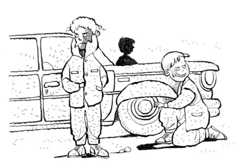
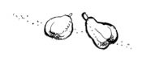

FRANÇOIS VE PAPA
(“Fransuva” okunur. Fransuva! Tövbe tövbe. Papa: Baba demek.)
Mahallede yüzme havuzu var inanır mısınız, bayağı büyük. Ahmet Ağa işletiyor, 5 lira verip yüzebiliyorsun. Yalnız, adamın bahçede meyve ağaçları var, ikisi bir arada olmuyor. Yani bir gün önce seni ağacın üstünde yakalayan adama, ertesi gün müşteri olarak gidiyorsun, bir garip oluyor ortam. Müşterisin, para veriyorsun, veli nimetsin; bir yandan da beni dövmesi gerekiyor, çok acayip iniş çıkış oluyor aramızda.
Şimdi, 1975 yılında yüzme havuzlu bir mahallede yaşadığımıza inandınız, ama bakalım buna ne diyeceksiniz: Mahalle Fransız kaynıyor! Eveeet... Yalanım varsa ne olayım.
Peki, Ahmet Ağa’yla Fransızların ne alakası var? Hiç, yine de ben ondan da bahsedeyim dedim.
Fransızlar Bursa’ya otomobil fabrikası kurmuşlar o dönem, Fiat. Biliyoruz herhalde Renault olduğunu, dikkatli okuyor musun diye kontrol ediyorum. Aferin yalnız, tetiktesin, yanlış yapsam dalacak gibi duruyorsun. Ben de bundan sonrasını dikkatli yazıyorum o zaman.
Bir de Saffet Amca var, emekli. Apartmanın ön bahçesine -onca çocuğun önüne- ayva ağacı dikmiş, olacak şey mi bu? Tabii normal olarak işi gücü olmayan Saffet Amca ve yine aynı konumdaki çocukların ve hayattaki tek ortak tutkuları olan ayvaların çıkaracağı problemler olacaktı, oldu da. En son mahallenin tüm veletleri olarak nasıl yaralanma ve berelenmeler olduysa, kendimizi Saffet Amca’nın evinin önünde protesto gösterisi yaparken bulduk. Hep beraber toplu şarkı söylüyoruz apartmanın önünde. Millet balkonlarda gülüşüyor, onlar da Saffet Amca’dan çekiyorlar çünkü.
Saffeet beni affeet
Yollarımı gözleet
Nerde verdiğim gofreet
Niçin neden yemeedin? diye bir beste.
Saffet Amca balkondan bağırıyor: “Ben size gösteririm, görürsünüüz sizz...”
Peki, Saffet Amca’nın Fransızlar ve Ahmet Ağa’yla ne alakası var? Hiç, ben ondan da bahsedeyim istedim.
Neyse, asıl konu Fransızlar. Biz bunlara kılız. Mahallede yaşıyorlar ama suratımıza bakmıyorlar, sanki biz yokuz. Normalde bunlar çok alçakgönüllü, yayılmacılığı falan olmayan tevazu içinde bir millettir bilirsiniz, bize denk gelenler ukala çıktı. Biz de dedik: “Oğlum, bunlarla mücadele edelim.” Çete kurduk; Kara Oklar Çetesi! (Evet, aynı isimde kitabım var eveet... Var ya çok dikkatlisin dostum sen, diğer okurlar malak sen çok akıllısın eveeet. Ya bırak, kitaba konsantre ol bir şey anlatıyorum, bırak sen başka kitabımı Allah Allah...)
Çetenin kuralları var; ağaca nasıl dalınır, çeteden biri diğerlerini ispiyonlarsa nasıl ceza alır, her şeyin kırbaç cezası falan da belli. En kötü şey, çeteden atılmak. Onun için cezaya razı oluyorsun zaten. Başkan iki ayda bir değişiyor. Beni başkan seçtiler, “Olmaz” dedim, “benim adayım Yekta” dedim... Bak sen bana! Herkes çok takdir etti.
Neyse, çetenin ana amacı, Fransızlara hadlerini bildirmek, “Biz buradayız oğlum, niye hiç bize merhaba bile demiyorsunuz?” demek. Bir nevi Çekirge yöresi Fransız Müdafaa-i Hukuk Cemiyeti’yiz yani.
Beyin fırtınası yaptık, omurilik soğanı rüzgârı oldu. En çok “Onları dövelim oğluum” önerisi geldi. Sonunda adamların çocukları da dâhil bizden iri oldukları kararına varıldı, “gene döveriz de, bir de zayiat veririz, değmez”e geldi olay. Daha operasyonel işlere girdik, çeşitli sabotaj planları yaptık.
Neler yaptık? Acayip miktarda salyangoz toplayıp lüks apartmanlarına girip kapılarına bıraktık, aşağıdan zilleri çalıp kaçtık. (Sonradan öğrendim adamların salyangoz yediğini. Biz salyangoz bırakıyoruz zannediyoruz, düşünsene yurtdışındasın, kapın çalınıyor, açıyorsun, kapının önü midye dolma dolu.)
Tam top oynadığımız yerde ahşaptan otoparkları var; kapılarında asma kilitler, her yeri kapalı -sanki yiyeceğiz arabalarını! Arabalarını oraya bırakıyorlar, özenle kilitleyip gidiyorlar. Baştan kabul ediyorum; bu, en pis operasyon oldu... Bir taşla iki kuş vurma misali... Hiç suratımıza bakmayan bir kadın var, çok lanet; top oynuyoruz, arabayı neredeyse üzerimize sürerek park ediyor her seferinde, oysa orası bizim top oynama yerimizken sonradan yaptılar barakayı, bize de bir şey sormadılar. Bu kadın yine geldi, “vaannk” diye oyunun ortasına daldı. Azıcık gülümsese eşyalarını taşır, dostu oluruz ama... Açtı garajın kapısını, girdi arabasıyla içeri. Çete içinde işaretleştik... Bize hep ters gelen bir de abimiz var, devamlı pis pis şaka yapıyor, bir türlü durduramıyoruz adamı (ama bu olaydan sonra duruldu); kadın arabasıyla barakaya girince -işaretleşmiştik ya- toplu olarak şakacı abiyi içeri ittik, barakanın kapısını da çektik, asma kilidi kapatıp uzaklaştık. Biz kaçarken -yani geri çekilirken- içeriden kadının ve şakacı abimizin çığlıkları geliyordu. Düşün, açık havada tahammül edemediğin Türklerle, hem de en kılıyla barakada baş başasın.
En önemli eylemimizse şu oldu: Dedik ki, “Bunlar işyerinde Türklerle çalışmıyorlar mı? Evet, çalışıyorlar. O zaman bunların işe geç kalmalarını sağlarsak bizimkiler rahat ederler, hem de daha iyi olurlar. Nasıl yaparız?” “Lastiklerini indirelim arabalarının” dedi biri, süper fikir! Akşamları çıkıyoruz ekipçe, zaten arabası olan Türk sayısı çok az, bir bunların arabaları var neredeyse, bir de işte Uludağ gazozlarının sahibinin falan. Siboptan bir lastiği söndürüyoruz. Bir lastik yetiyor. Sabah okula giderken bir bakıyoruz, daha doğrusu pek de bakmıyoruz dikkat çekmeyelim diye. Normalde işte olması gereken o havalı arkadaşlar ellerinde pompa, fıs fıs araba lastiği şişiriyorlar.
Adamlar kıllanıyorlar ama hiç kanıt yok. Ülkemizi fedakârca savunuyoruz. “Kahramanca” diyemem, çok kaçak güreşiyoruz ve harbiden kalbimiz küt küt atıyor. Bakın, babam rahmetli olmadan bile yazamadım bunları, o kadar.
Yalnız bir François var -evet, Fransuva! Biliyorum ben senin nasıl öğrendiğini onu, bana hava yapma sen- çok efendi bir çocuk. Yaşıtız ve her yaşıtım gibi o da benden uzun. Bu, bana bazen sırıtıyor, el falan sallıyor. Bir gün oturmuşum ağacın altına, geldi bir şeyler söyledi Fransızca, ben anlamadım, Türkçe bir şeyler söyledim, biz başladık iki farklı dilde konuşmaya ama anlaştık sonunda. En azından ikimiz de arkadaş olmak istediğimizi biliyoruz. Yalnız ben vatana ihanetten yargılanabilirim; bildiğin düşman saflarından biriyle sohbet ediyorum! Neyse, kimseye görünmeden oynadık biz. Eliyle “yarın görüşürüz” işareti yaptı bana. Tam anlatamıyorum nasıl gösterdiğini ama gösterdi işte. Fransızca ve İtalyanca nasıl el hareketi çekiliri de gösterdi, ben de ona Türkçesini gösterdim, hatta bir diğer bileği tutarak nasıl şaklatılırı da öğrettim, “Akşam yap senin Papa’ya” dedim. (Vatikan’daki Papa değil, arkadaşım başlığı dikkatli okumazsan böyle olur! “Fransuva” diye hava atıyordun demin ama... Bu arada bildiğim birçok küfrü ve cinsel bilgiyi de Ahmet’ten almışımdır, tahmin edeceğiniz gibi yarım yamalak, yani küfürler tam da, diğeri yarım.)
Akşam eve gidince, “Baba (Baba, bildiğiniz baba anlamında; Vatikan’dakinden değil) Fransızca biliyor musun?” diye sordum. Ya, bir şeyi de bilme değil mi? “Biliyorum tabii” dedi babam. Anlattım durumu. “Şimdi ben sana hemen öğretemem ama sana cümleleri yazayım, onlarla konuşursun” dedi. “Ne yazayım?” diye sordu? “Topun var mı?” dedim ben, ilk cümleyi yazdı babam: Avez vous la balle? “Avevulabal” şeklinde okunuyor. Kuleli’de öğrendiğim, J’ai allumé le feu dans la maison cümlesinden sonra en gereksiz cümledir. Kaç defa kullanabilirsin ki hayatta? Ne demek mi? “Evin içindeki ateşi yaktım.” Evet, yuh! Adın ne, falan gibi cümleler de yazdı babam. Ertesi gün ben çatır çatır konuştum. Tıkandım mı “Adın ne?” diyorum, o da uzun bir cümle sonunda “François” diyor. Herhalde “Adımı bildiğin hâlde öküz gibi niye sorup duruyorsun? Fronçois dedik ya” diyordur.
Neyse, biz bununla arkadaş olduk ama evlerinin alt tarafında sote bir yerde buluşuyoruz; bizimkilerin hayatta gelmeyecekleri bir bölge, görürlerse şok olurlar. Köpeği var Fransuva’nın, adı Yak. Lessi türü (Collie demeyi ben de biliyorum ama Lessi denir ona halk arasında, sen ben de halkız bildiğin). Yani sırf o köpek için arkadaş olursun adamla.
Bu arada Ahmet’e de eylemlerimizi anlatıyorum, çok takdir ediyor, “Aferin size, böyle olmalı, Emirsultan’da olacaklar ki ben neler yapmam onlara” diyor. Yalnız ona da, “Biriyle arkadaş oldum” diyemiyorum; diyetle turşu arasındaki bağlantıyı anlatan deyimi bilmiyoruz o zaman. Dayar yoksa bana tak diye. (Bulamadın değil mi? Tabii başlıkta yazmıyor, bulamazsın. “Bu ne perhiz bu ne lahana turşusu”. Edebiyatta bu yaptığıma bir şey denmiyor rahat ol.)
Neyse, bir akşam operasyona çıktık Kara Oklar Çetesi olarak. Bizimkiler Fransuva’nın babasının arabasına yanaşırlarken, “Ona dokunmuyoruz” dedim. “Niye ki?” diye hepsi hayretle bana baktı. “Dokunmayın, yarın anlatırım” dedim. Anlatmam harbiden zor oldu ertesi gün. Adım adım hepsiyle arkadaş oldu Fransuva; top bile oynuyoruz onunla. Bir gün hava acayip sıcak, greyder park etmişler top sahasına, gitmişler. Gölgesine sığınalım dedik, baktık greyderin kepçesi boş, yerleştik kepçenin içine... Elimizde Tom Miks, Teksas, Zagor dergileri. Hepsi Türkçe, Fransuva resimlerine bakıyor, soruyor bazen bana resimlerini gösterip, “Türk Büyükleri” diyorum. Neyse, uyuyup kalmışız kepçenin içinde. Öğlen olmuş, hava iyice ısınmış. Bir gürültüyle uyandık; kepçe havada, dozer gidiyor bir yerlere... Biz bir panik, hön hüün bağırmaya başladık. Kepçe aşağı yukarı oynuyor. Meğerse kepçe operatörü gelip bizi uyurken görmüş, dalgasını geçiyormuş. Biz de sonradan çok güldük.
Bu arada Fransuva’nın babası mesaiye rahat gidiyor; lastikler sağlam. Mahallede bir uğultu dolaşıyor ama işi kimin yaptığı belli değil. Akşamları Fransızları karanlıkta dışarıda çok görmeye başladık; onlar da işi nöbete bindirmişler, dolaşıyorlar. Mahalle bizim olduğu için erketeye yatıp onları takip ediyoruz, yine lastiği söndürüp dönüyoruz. Fakat sıklığı azalttık.
Bir akşam tam Fransızların çoğunluğunun oturduğu apartmanın önündeyiz, kalpler pır pır lastik söndürüyoruz, apartmanın girişinden bir gürültü patırtı geldi, baktık, Atilla kapının önünden bağırıyor: “Kaçıın kaçııın!” Biz -yedi sekiz çocuk- bir anda fırladık mahallede koşuyoruz. Arkama bir baktım, bizim Fransuva’nın babasıyla göz göze geldim; o kovalıyor, biz önde toplu hâlde koşuyoruz... “Oğlum, dağılın!” dedi birisi; birimiz sağa atladık, birimiz apartmanların arasına, ben Atilla’yla çalılığın arkasına saklandım ama her tarafımız çizildi. “Allah Allah, biz onun lastiğini söndürmüyoruz ki!” diye birbirimize baktık. “Önümüzdeki birkaç akşam çıkmıyoruz, ona göre!” dedim.
Eve geldim ama kalbim küt küt. En çok da anneme ve babama ne diyeceğim, onu düşünüyorum. O üç dört gün geçmek bilmedi. Aramızda konuştuk; yakalanan yok, herkes bir tarafa kaçmış ama babası beni gördü, tanıyor da... Konuşursa yandık ama hiçbir şey çıkmadı bir süre. Yine de ben, bugün yarın eve gelirler diye korku içindeyim.
Bir süre sonra çıktık dışarı Fransuva’yla buluştuk. Öğrendim ki bunlar, annesi, Fransuva ve Yak misafirliğe gidiyorlar, Yak hastalanıyor -bayılıyor mu ne-, bunlar da babalarını arıyorlar köpeğin öleceğini zannedip, adam da bu durumu duyunca panik içinde apartmandan fırlıyor, Atilla da onu koşarak çıkarken görünce bize “Kaçın” diye bağırıyor. Adamın bizi gördüğü yok ama sahneyi düşünün; bir yere aceleyle koşuyorsun, önünden de onlarca çocuk koşuyor... Anlam verememiştir herhalde.
Neyse, sorun çıkmadı, biz de sıyırmış olduk. Sonrasında aramızda bir şey konuşmadık olayla ilgili ama Fransız ulusuyla olan mücadelemiz o akşam otomatik olarak sona erdi.
Fransuva Türkiye’den giderken ikimiz de ağladık. O kadar zaman aramızda ne konuştuğumuzu o da ben de bilmiyoruzdur; sadece arkadaş olduğumuzu biliyordur ve emin olun Türk dostudur.
Saffet Amca ve Ahmet Ağa o zaman 60’lı yaşlarındaydılar; hâlâ yaşıyorlarsa gereğinden fazla yaşamışlar demektir. Olur da vefat etmişlerse Allah gani gani rahmet eylesin. Bu arada Saffet Amca da beni affetsin ama yollarımı gözetmesin.
Bir de bugün Oyak Renault’da genel müdür ve yöneticiler Türkler ise, mühendisler belli noktalara gelmişlerse, o dönem Fransızların sabahları işe geç gelmesiyle direkt bir bağlantısı vardır ona göre.
